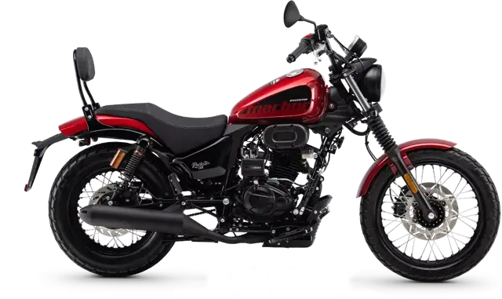
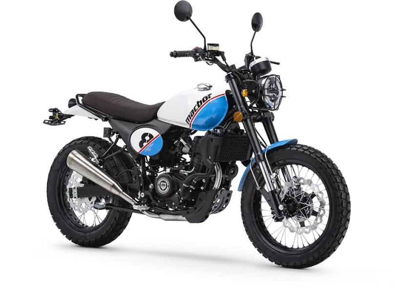
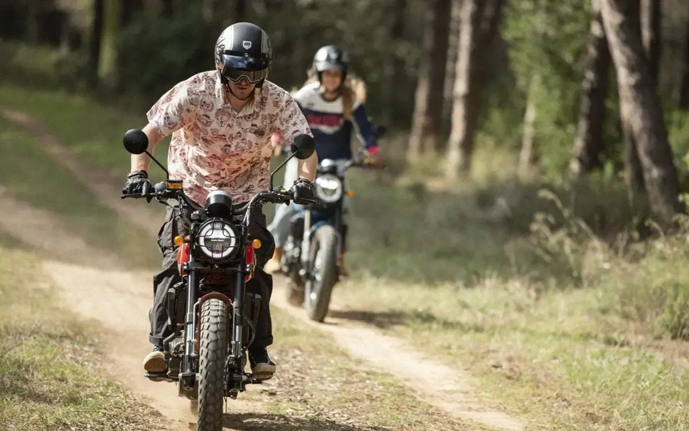
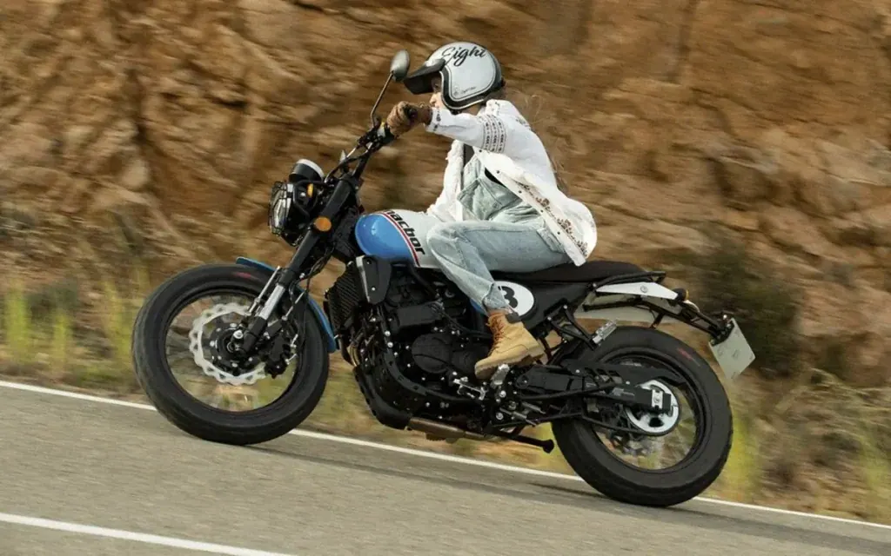
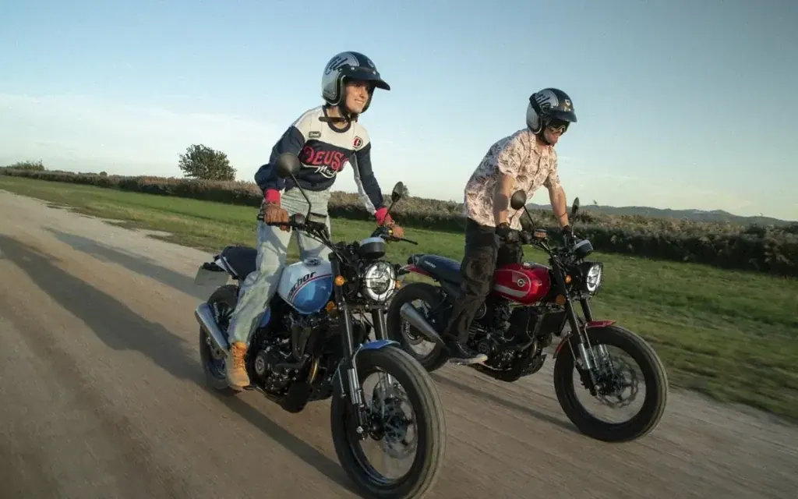
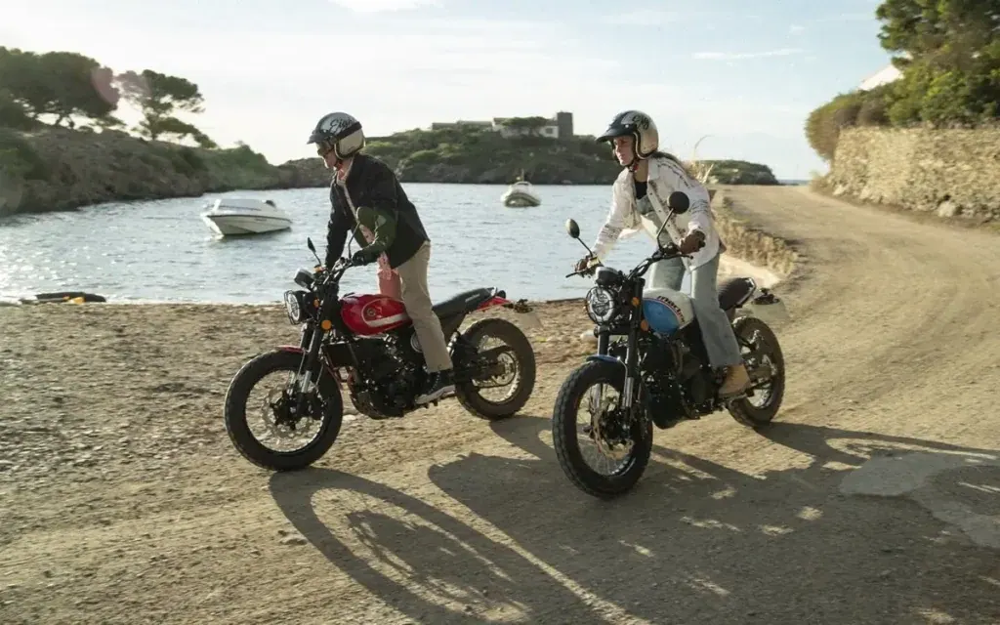

Macbor
Rockster 125 EVO
B·A1 125 cc · Clásicas
Propuesta de OpsPilot para Expomoto Córdoba, en revisión. No es la web oficial: expomotocordoba.es
Inicio › Motos › Macbor › Eight Mile 125 LC

Macbor
Precio y financiación: te los damos al momento por teléfono (pendientes de publicar en la web).




Esta nueva moto 125 de Macbor está pensada para dar sensaciones de libertad, diversión y estilo que se convertirán en tus máximas diarias.
Incorpora un nuevo motor refrigerado por agua, iluminación Full LED, pantalla LCD, un llamativo protector del faro delantero, un tapizado de sillín de gran calidad con el escudo Macbor grabado en él, además de contar con monoamortiguador trasero con sistema de bieletas y frenada combinada CBS.
La Eight Mile 125 LC comparte la polivalencia y agilidad de las “street”, y por otro lado, se diferencia y seduce gracias a su auténtico estilo classic y una fuerte personalidad.
| Motor | Monocilíndrico 4 tiempos |
|---|---|
| Cilindrada | 124,2 cc |
| Diámetro por carrera | 58 x 47 mm |
| Ratio | 12.1 |
| Alimentación | Inyección Electrónica – Bosch (MSE8.0) |
| Encendido | Electrónico – Bosch (MSE8.0) |
| Arranque | Eléctrico |
| Potencia | 9,5 kW / 9.500 rpm |
| Par motor | 10,3 Nm / 6.500 rpm |
| Capacidad | 14,5 L |
| Dimensiones | 2.090 x 870 x 1.131 mm (largo x ancho x alto) |
| Altura Asiento | 820 mm |
| Peso Vacío | 128 Kg |
| Distancia entre ejes | 1.436 mm |
| Distancia mínima al suelo | 146 mm |
| Caja de cambios | Manual de 6 velocidades |
| Neumático Delantero | 100 / 90-18 |
| Neumático Trasero | 130 / 80-17 |
| Suspensión Delantera | Horquilla invertida diám. 38 mm |
| Suspensión Trasera | Monoamortiguador con sistema de bieletas y regulable en compresión |
| Freno | Delantero: 1 disco 298 mm, pinza flotante tres pistones. Trasero: disco 240 mm, pinza flotante simple pistón. CBS (Sistema Combinado de Frenada) |
| Instrumentos | LCD |
| Faro | Full LED |
| Piloto Trasero | Full LED |
| Colores | Rojo, Negro mate y Blanco |
Datos de la marca, tal como se publican en expomotocordoba.es.